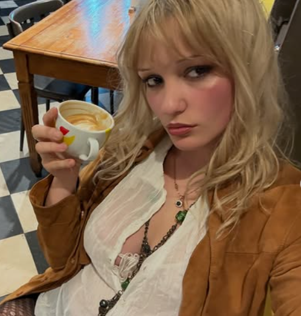

PRESIÓN
Los influencers sienten una presión de mantenerse vigentes y de crear contenido continuamente para que el algoritmo los mantenga.
Influencers entrevistados

"La verdad que me cuesta tomarme descansos, no me gusta abandonar al público"

"Siempre trato de estar activa en redes para no perder la continuidad y que mi contenido siga apareciendo"

"No tengo muchos seguidores, tengo una comunidad muy fiel, intentó que lo que subo me represente"